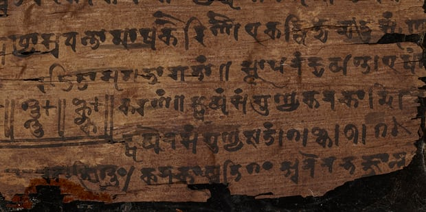

Zero is one of those concepts we now take for granted but it was not always thought of as a number in ancient cultures. Here are some tidbits of what historians know:
- The number zero arrived in Europe ~1200 through Fibonacci (Leonardo of Pisa).
- The historical record points to the concept of zero first arising more as a placeholder, a space. But initially, no symbol was assigned to it.
- Two ancient cultures seem to have developed zero as a number somewhere between the first and the fourth century A.D.
- Zero appeared in Mayan culture sometime in the early A.D. centuries.
- It appeared in India sometime in the fourth century A.D.
For more fascinating readings on this subject, go to:
- This article in the Scientific American.
- This article in the New York Times.
- This article in Wikipedia.